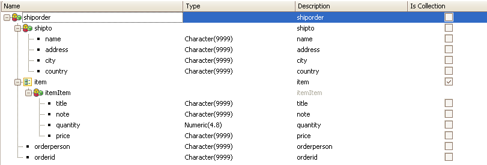
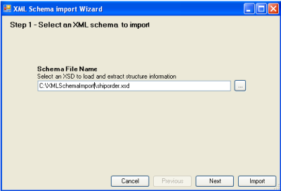
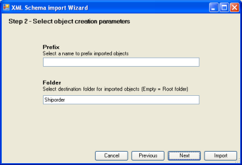
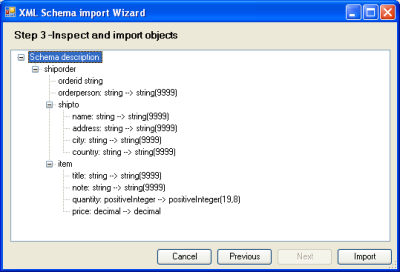

One way to introduce structured data in a GeneXus Knowledge Base is to define the structure itself inside the SDT editor.
Another possibility is to import external Objects, such as Web Services or native classes, or to drag controls to the form that provides this kind of definition.
In addition, GeneXus allows you to import structured data through the XML schema definition itself (**). It means that by getting the XSD file of any structure, you can create an SDT object inside the GeneXus Knowledge base, based on this schema file. Despite the fact that this is not the most common practice, it could be useful for integrating applications or for reuse purposes, especially in prototype environments.
As a result, we have increased ways to interact with external definitions in GeneXus Knowledge Bases.
(**) An XML schema describes the structure of an XML document. The XML Schema language is also referred to as XML Schema Definition (XSD).
Example
A simple, real world example is given by the Information Clearing Office of Uruguay, where a set of Web Services are provided for consumption by different customers. These XSD files are also published as a way to simplify Web Service consumption.
One of these files could be imported into the GeneXus Knowledge Base, by creating one or more SDT objects, thus allowing you to work on other modules without the need to import the Web Service and a large number of other structures.
Another simple example is given by the Shiporder.xsd file:
<?xml version="1.0" encoding="ISO-8859-1" ?>
<xs:schema xmlns:xs="http://www.w3.org/2001/XMLSchema">
<xs:element name="shiporder">
<xs:complexType>
<xs:sequence>
<xs:element name="orderperson" type="xs:string"/>
<xs:element name="shipto">
<xs:complexType>
<xs:sequence>
<xs:element name="name" type="xs:string"/>
<xs:element name="address" type="xs:string"/>
<xs:element name="city" type="xs:string"/>
<xs:element name="country" type="xs:string"/>
</xs:sequence>
</xs:complexType>
</xs:element>
<xs:element name="item" maxOccurs="unbounded">
<xs:complexType>
<xs:sequence>
<xs:element name="title" type="xs:string"/>
<xs:element name="note" type="xs:string" minOccurs="0"/>
<xs:element name="quantity" type="xs:positiveInteger"/>
<xs:element name="price" type="xs:decimal"/>
</xs:sequence>
</xs:complexType>
</xs:element>
</xs:sequence>
<xs:attribute name="orderid" type="xs:string" use="required"/>
</xs:complexType>
</xs:element>
</xs:schema>
After importing this scheme definition, a structure data type like the one bellow is created:

After this, it is possible to populate an Xml instance of this definition by using a Data Provider. The Xml file looks as follows :
<shiporder orderid="889923"
xmlns:xsi="http://www.w3.org/2001/XMLSchema-instance"
xsi:noNamespaceSchemaLocation="shiporder.xsd">
<orderperson>John Smith</orderperson>
<shipto>
<name>Ola Nordmann</name>
<address>Langgt 23</address>
<city>4000 Stavanger</city>
<country>Norway</country>
</shipto>
<item>
<title>Empire Burlesque</title>
<note>Special Edition</note>
<quantity>1</quantity>
<price>10.90</price>
</item>
<item>
<title>Hide your heart</title>
<quantity>1</quantity>
<price>9.90</price>
</item>
</shiporder>
This import dialog is located at Tools/Application integration/XML schema Import.
To import a schema file, three simple steps must be performed:
1.- Choose the XSD file.

2.- Specify a prefix and the GeneXus folder location where the SDT object will be created.

3.- Show the structure and import.

This feature only applies to XSD files, and it is not valid for other kinds of XML definitions such as DTD.
|